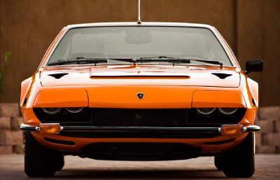

|  |
Lamborghini Jarama
|
The Lamborghini Jarama is a high-performance grand tourer produced by the Italian automaker Lamborghini between 1970 and 1976. It was named after a district in Madrid, Spain, which is known for its bullfighting.
The Jarama features a front-engine layout and is powered by a naturally aspirated 4.0-liter V12 engine, which produced 350 horsepower in the later models. It was available with both manual and automatic transmissions.
The Jarama's exterior design was characterized by clean lines and a classic GT car profile, with a long hood and a sloping rear end. The interior was spacious and comfortable, with high-quality materials and a focus on luxury rather than sportiness.
The Jarama was designed as a more practical and comfortable alternative to Lamborghini's more extreme sports cars, such as the Miura and the Countach. It was intended to be a fast and comfortable grand tourer that could be used for long-distance driving and daily use.
Although it was not as successful or iconic as some of Lamborghini's other models, the Jarama is still considered to be an important part of the brand's history and a unique and interesting car in its own right.